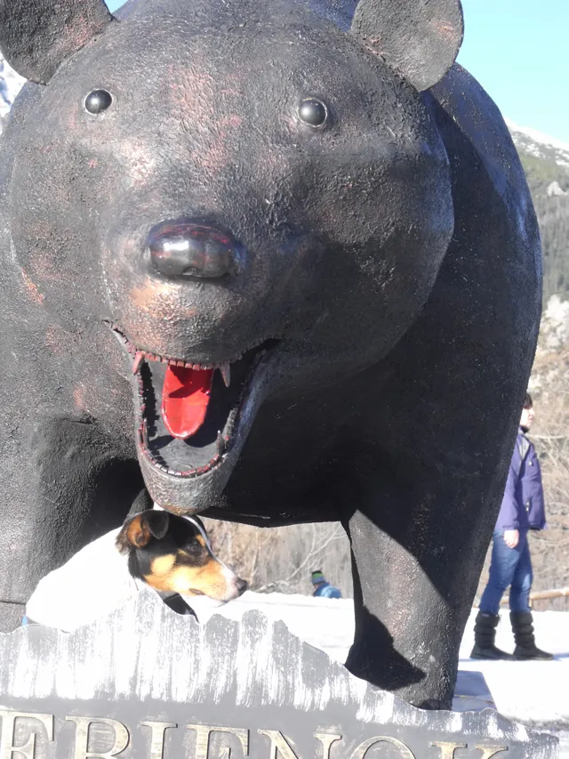

Tekst + audio
Niedźwiedzie pieskie życie
Medvedí život pod psa
Absurdalna satyra z czasów współczesnych! Głód szaleje, kontenery opanowały inne drapieżniki, a leśna idylla zamienia się w dziczyznę z puszek i szkiełek.
A jak przeżyć, gdy do twojej gawry wpada skialpinista z biurokratycznym pytaniem? Niedźwiedzie filozofują, ludzie rabują, a przyroda się buntuje.
Płatność i pobranie plików przez Payhip. Payhip otworzy się w nowym oknie.
Fragment tekstu
„Mutti? Ten głodzior znowu szaleje. Jakby go wyrostek złapał”.
„Masz za swoje, bo ślinisz się tylko do kulinarnych balang i do seksu. Zanim się wygramolisz z łóżka, po runie leśnym ani śladu. A wokół uli jacyś sadyści naciągnęli nam prąd”.
„Nie możemy schrupać czegoś innego?”
„Zgadłeś. W kontenerach królują Romowie. Po nich w tym chlewie grzebią bezdomni. Ci wygolą śmietniki do ostatniego włoska. A za butelki nic nie kupisz, bo psom i niedźwiedziom wstęp do sklepu wzbroniony”.
„A ludzie na nasze terytorium mogą? Przecież w górach od zawsze rządziło nasze stado”.
…
Fragment początku polskiego tłumaczenia. Pełnej polskiej wersji jeszcze nie ma w sprzedaży.